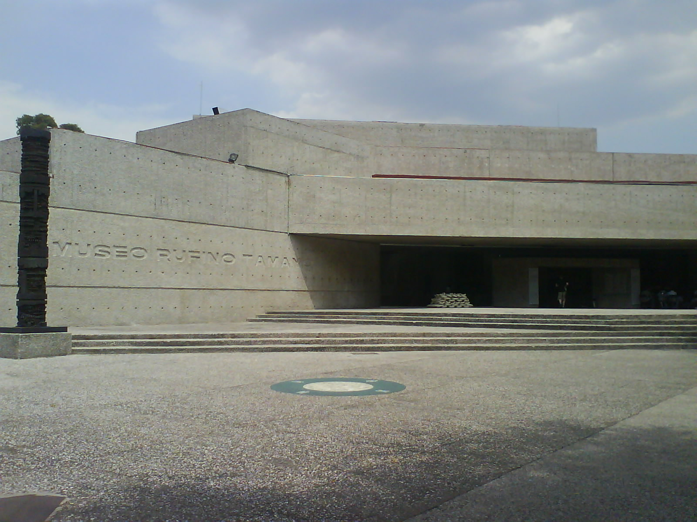
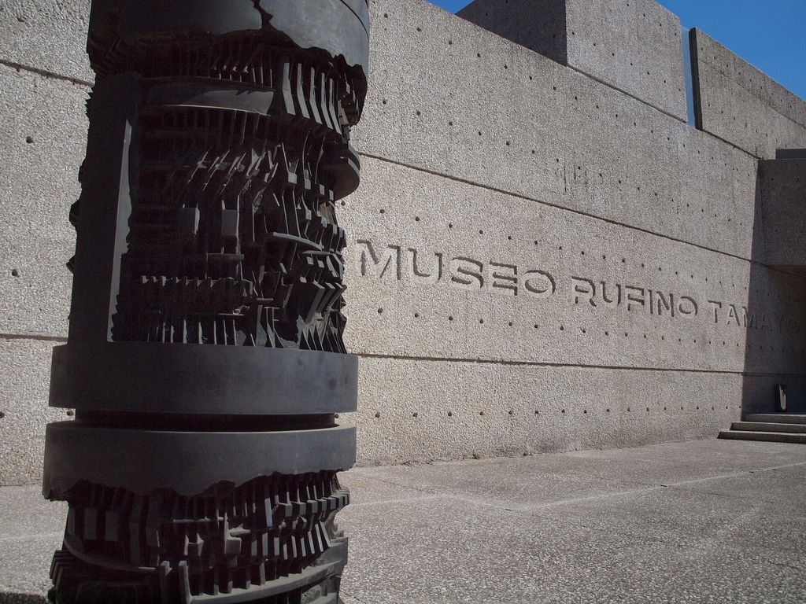
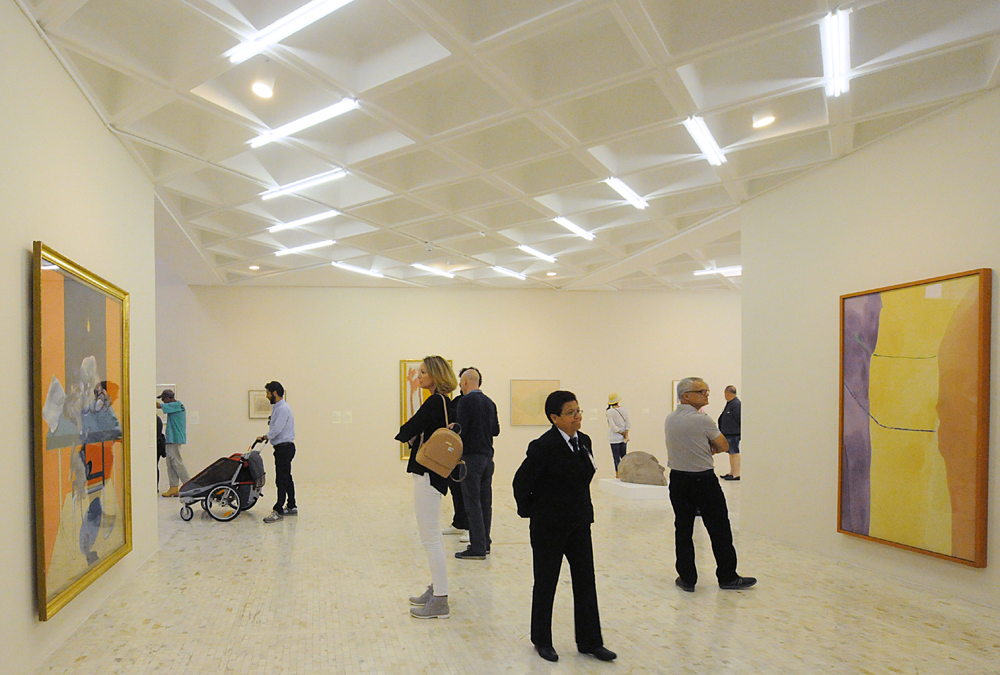

El MAM forma parte de los recintos culturales de la zona junto con lugares como lo son la Casa del Lago, el Museo Nacional de Historia, y el Museo Rufino Tamayo.
Uno de los lugares que han sido testigos de esta evolución, y cuyo propósito es ofrecer un espacio público para crear una experiencia única en sus visitantes, es el Museo de Arte Moderno (MAM), ubicado dentro del perímetro del Bosque de Chapultepec, a un costado de Prolongación Reforma.
Una de las principales características del museo, es la creación de una infraestructura en la que se pueden alojar trabajos de distintas disciplinas, en una disposición poco convencional, ya que los espacios son curvos, y el cristal polarizado de las ventanas crean un espacio de apreciación agradable a cualquier hora del día.
Uno de los lugares que han sido testigos de esta evolución, y cuyo propósito es ofrecer un espacio público para crear una experiencia única en sus visitantes, es el Museo de Arte Moderno (MAM), ubicado dentro del perímetro del Bosque de Chapultepec, a un costado de Prolongación Reforma.
Entrada
Núcleos de la Colección

Desde su fundación, el MAM ha desempeñado un papel decisivo en la consolidación y la difusión de un patrimonio público, en virtud principalmente de su excepcional colección que abarca un arco temporal de largo alcance (de la década de 1920 al presente) pero que, por su misma configuración evolutiva, implica una vocación retrospectiva y a la vez prospectiva.
La arquitectura del MAM enfatizaba una vocación contemporánea con leves referencias a la tradición en el uso de ciertos materiales. Su aliento racionalista recurrió a las formas orgánicas, a la fluidez entre el interior y el exterior, a una estructura libre, al uso de acabados y materiales constructivos en un tiempo de moda, como el cristal, el mármol blanco, el pedernal en bruto, el aluminio y la fibra de vidrio. El edificio del MAM se inspiró en un diseño del arquitecto Pedro Ramírez Vázquez, en colaboración con Rafael Mijares. Una parte del proyecto original, el cual incluía auditorio, biblioteca y bodegas, nunca llegó a concretarse.
Esculturas
El museo se enfoca a mostrar el arte moderno mexicano, principalmente de la década de 1930 en adelante. Dentro de su exhibiciòn permanente se encuentran obras de varios grandes maestros mexicanos del periodo, tales como: Frida Kahlo, Julio Castellanos, David Alfaro Siqueiros, Emir Jair, Roberto Montenegro,etc.

El MAM cuenta con dos edificios, el edificio principal de exposiciones y la Sala Gamboa, destinada a albergar proyectos vanguardistas en distintos géneros artísticos. En adición a estos, los jardines del recinto presentan un rico contenido escultórico con piezas en bronce, hierro y otros metales. El edificio principal del museo tiene cuatro salas principales dispuestas en los dos pisos de la construcción, y una sala pequeña en la que se expone actualmente una muestra del movimiento musical latinoamericano.
Contiene elementos inspirados y abstraídos en la arquitectura mesoamericana en los cuatro remates-gárgola alusivos a Quetzalcóatl. Según la especialista Louise Noelle, el cárcamo se asemeja a un "templo clásico “anfipróstilo”, con una serie de columnas in antis al frente y en la parte posterior, que protegen a la cella o naos, donde se enseñorea la diosa agua".2 Fue proyectado inicialmente para ser decorado en su totalidad, incluidos muros, pechinas y tambor de la cúpula que remata el edificio y amplificó el sonido de las aguas corrientes provenientes del Lerma en todo el edificio3 pero Rivera sólo logró terminar la pintura en el tanque subacuático y la fuente exterior.
Salas
Es una parada obligada en tu visita al Bosque de Chapultepec.

La intención museográfica de este espacio se centró en una visión panorámica de la evolución de la plástica mexicana a través de sus máximos exponentes, ejemplificados en muestras de las diversas escuelas que, a lo largo del tiempo, se han expresado en nuestro país.
Exposiciones
Núcleos de la Colección
El MAM cuenta con dos edificios, el edificio principal de exposiciones y la Sala Gamboa, destinada a albergar proyectos vanguardistas en distintos géneros artísticos. En adición a estos, los jardines del recinto presentan un rico contenido escultórico con piezas en bronce, hierro y otros metales. El edificio principal del museo tiene cuatro salas principales dispuestas en los dos pisos de la construcción, y una sala pequeña en la que se expone actualmente una muestra del movimiento musical latinoamericano.
Las exposiciones del museo se encuentran en constante cambio, han albergado importantes colecciones como "Retrospectivas" de Graciela Iturbide, y "El volumen develado" de María Lagunes. Si se quiere hacer una retrospectiva a través de sus piezas, se puede llevar acabo en su sitio web www.mam.org.mx , en la sección "La máquina visual".
El Museo de Arte Moderno dedica una sala a la colección de obras de Remedios Varo que fue donada en 2002 por Walter Gruen y Anna Alexandra Varsoviano, ambos finados. Esta lectura echa mano de múltiples datos sueltos -muchos de ellos contenidos en el catálogo razonado publicado por Era en 1994-, que permiten construir la crónica de este valioso acervo
La exposición recrea el ejercicio del historiador, que recopila e interpreta los pedazos de historia que van apareciendo en documentos, testimonios y múltiples estudios a cargo de otros investigadores. A manera de libro abierto, la muestra revela datos significativos: procedencias, firmas reconocidas, anecdotario, comentarios de la propia Varo y de terceros acerca de cada uno de sus cuadros, pormenores de la donación de este fondo de 39 piezas al MAM, así como una cronología centrada más en los datos curiosos que en los grandes temas asociados a la obra de Remedios Varo, una de las más destacadas representantes del surrealismo en México.
Colecciones
Conformado por alrededor de 3 mil pinturas, esculturas, fotografías, dibujos y grabados en constante proceso de catalogación e integración.
En 1974, la colección formada por Alvar Carrillo Gil dejó de estar en custodia del mam para integrarse definitivamente y de manera independiente al Museo de Arte Carrillo Gil. Por otro lado, en 1981 se cedieron al Museo Nacional de Arte obras del siglo XIX que representan un antecedente o una transición a las vanguardias del siglo XX.
La primera mitad del siglo xx está representada por cerca de 358 obras. Muchas de ellas proviene de las décadas de 1930, 1940 y 1950, y pertenecen a Ángel Zárraga, Gerardo Murillo (Dr. Atl), Roberto Montenegro, Diego Rivera, David Alfaro Siqueiros, José Clemente Orozco, Abraham Ángel, Manuel Rodríguez Lozano, Frida Kahlo, Carlos Orozco Romero y Rufino Tamayo; y a otros miembros en la Escuela Mexicana de Pintura como Julio Castellanos, María Izquierdo, Luis Ortiz Monasterio, Agustín Lazo y Juan O´Gorman. Hay también obra fotográfica de Manuel Álvarez Bravo, Tina Modotti y Edward Weston.
La colección del MAM ofrece un panorama de los procesos artísticos que siguieron al muralismo y la Escuela Mexicana de Pintura. Nos referimos a la llamada Ruptura, con artistas como Lilia Carrillo, Fernando García Ponce, Vicente Rojo, Pedro Coronel, Manuel Felguérez y José Luis Cuevas, y a quienes, junto a ellos, pelearon por un arte con mayor amplitud de miras e ideológicamente libre: Juan Soriano, Arnaldo Coen, Alberto Gironella, Gunther Gerzso, Mathias Goeritz, Carlos Mérida, Kasuya Sakai y Vlady.